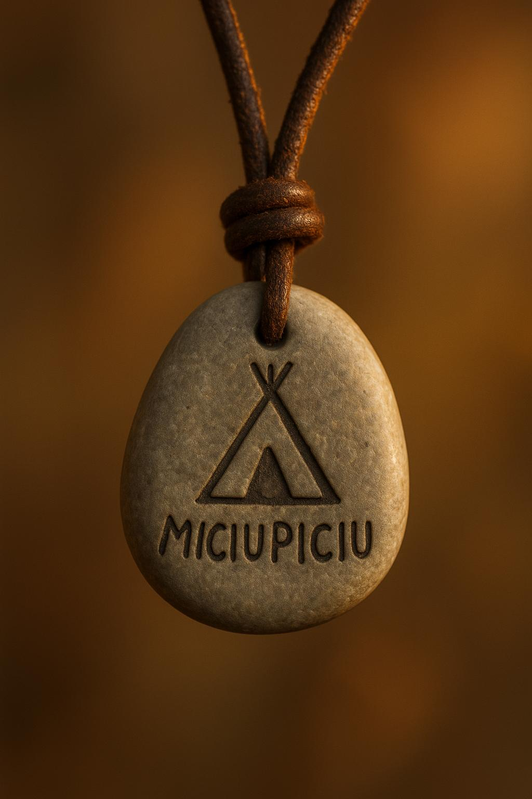

Home
Activități
Curiozități despre Miciu-Piciu
Galerie Foto
Ne găsești aici
Mesaj Sacru
Indian Camping Nucșoara
Ateliere de creație

Pictură pe pietre
Pictură pe lemn
Terariu hand-made Prindem insecte și le facem propria căsuță